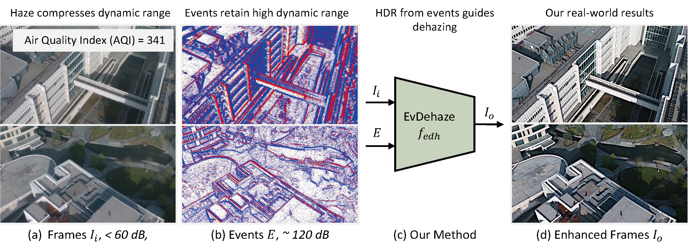

EvDehaze: Dynamic Scene Dehazing via Event Camera
Abstract
Clear imaging under hazy conditions is a critical task. To address the limitations of traditional dehazing models based solely on RGB sensors, we propose EvDehaze, the first event-guided diffusion framework for image dehazing. Leveraging the high dynamic range and temporal precision of event cameras, EvDehaze conditions a latent diffusion model with event-derived edge and illumination features. A newly collected real-world dataset with synchronized RGB-event data under heavy haze is also introduced. Our method achieves state-of-the-art performance across synthetic and real-world benchmarks.
Motivation and Overview
Method: EvDehaze Framework
Event-Based Real-World Dataset
Qualitative Comparison


Real Event Evaluation

Simulated Event from RESIDE